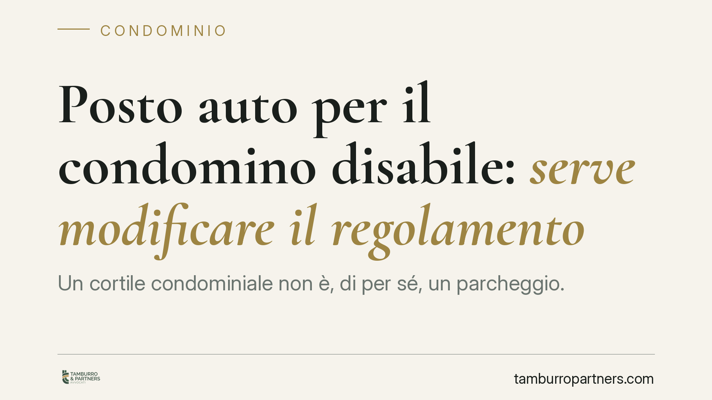

Posto auto per il condomino disabile: serve modificare il regolamento
Un cortile condominiale non è, di per sé, un parcheggio. Il Tribunale di Piacenza ha negato a un condomino disabile l'assegnazione di uno stallo riservato perché il regolamento non destina l'area alla sosta. Per ottenerlo occorre prima una delibera con quorum qualificato. La pronuncia chiarisce i confini tra uso più intenso del bene comune e innovazione.

Il caso
Un condomino con disabilità ha chiesto l'assegnazione di un posto auto riservato nel cortile comune. Il Tribunale di Piacenza ha respinto la domanda per una ragione preliminare: il regolamento condominiale non destinava quell'area alla sosta dei veicoli. In assenza di una previsione in tal senso, non esiste un posto auto da assegnare, e il singolo non può pretenderlo né sulla base della sola condizione di disabilità né invocando un uso di fatto dello spazio comune.
Nota redazionale: al momento della pubblicazione non risultano reperibili gli estremi ufficiali (numero e data) della pronuncia. Trattiamo quindi il contenuto come orientamento interpretativo, utile per comprendere il meccanismo, e non come precedente vincolante da citare in giudizio.
Inquadramento normativo
Il nodo è la distinzione tra due istituti diversi.
L'art. 1102 c.c. consente a ciascun condomino di servirsi della cosa comune in modo più intenso, purché non ne alteri la destinazione e non impedisca agli altri un pari uso. Parcheggiare in un cortile già destinato alla circolazione o alla sosta può rientrare in questo perimetro. Ma se la destinazione del bene non contempla la sosta, assegnare uno stallo fisso a un singolo esce dall'uso consentito: sottrae stabilmente una porzione di spazio comune all'uso degli altri.
Qui interviene l'art. 1120 c.c., che disciplina le innovazioni. Modificare la destinazione del cortile per introdurre posti auto — e ancor più riservarne uno in via esclusiva — è un'innovazione. Per le opere dirette a eliminare le barriere architettoniche, il secondo comma, n. 2, dell'art. 1120 c.c. prevede un quorum agevolato: la delibera si approva con la maggioranza richiesta dall'art. 1136, comma 2, c.c., cioè la maggioranza degli intervenuti che rappresenti almeno la metà del valore dell'edificio (500 millesimi). Non basta dunque la soglia millesimale: serve anche la maggioranza delle teste presenti.
Un chiarimento necessario, perché spesso confuso. La L. 13/1989 non detta il quorum ordinario per queste delibere. Il suo art. 2 disciplina un rimedio diverso e sussidiario: se l'assemblea, pur richiesta, non provvede entro un termine oppure rifiuta, il condominio disabile può eseguire a proprie spese le opere necessarie all'abbattimento delle barriere. È una facoltà individuale che scatta a fronte dell'inerzia o del diniego assembleare, non un meccanismo di maggioranza agevolata. Confondere i due piani porta a errori operativi gravi.
Quanto alla L. 104/1992, essa definisce lo stato di disabilità e i relativi diritti assistenziali, ma non attribuisce di per sé il diritto a uno stallo nel cortile condominiale. È il presupposto soggettivo, non la fonte diretta della pretesa.
Implicazioni pratiche
Per il condomino disabile il messaggio è chiaro: la condizione personale, da sola, non crea il posto auto. Occorre verificare cosa dice il regolamento e, se l'area non è destinata alla sosta, passare dall'assemblea con la delibera corretta.
Per l'amministratore il rischio è duplice. Da un lato, ignorare la richiesta espone il condominio al rimedio individuale dell'art. 2 L. 13/1989 e a possibili responsabilità. Dall'altro, far approvare l'intervento con un quorum insufficiente genera una delibera viziata.
Su quest'ultimo punto va ricordato l'art. 1137 c.c.: la delibera assunta senza il quorum richiesto è impugnabile davanti all'autorità giudiziaria nel termine di trenta giorni. Una decisione presa in fretta e male può quindi essere annullata, vanificando l'intervento e lasciando il condomino senza tutela.
Cosa fare in concreto
- Verificate il regolamento prima di ogni iniziativa: accertate se il cortile è destinato alla sosta o solo alla circolazione e al transito.
- Qualificate correttamente l'intervento: distinguete tra un uso più intenso ex art. 1102 c.c. (ammesso se l'area è già destinata a parcheggio) e un'innovazione ex art. 1120 c.c. (che impone la delibera).
- Convocate l'assemblea con il quorum corretto: per le opere di abbattimento delle barriere, art. 1120, comma 2, n. 2, c.c. e art. 1136, comma 2, c.c., ossia maggioranza degli intervenuti e almeno 500 millesimi.
- Verbalizzate con cura l'oggetto della delibera, le presenze e le maggioranze raggiunte: è la prova che tiene in caso di contestazione.
- Valutate il rimedio individuale ex art. 2 L. 13/1989 quando l'assemblea resti inerte o rifiuti: consigliamo di documentare per iscritto la richiesta e la mancata risposta, per attivare la facoltà del singolo nei limiti di legge.
---
Contributo informativo a cura di Tamburro & Partners - Avv. Giuseppe Tamburro. Non costituisce parere legale.
Ogni condominio ha una storia a sé.
Se gestisci un'amministrazione e vuoi un confronto su una specifica questione condominiale, scrivi allo studio. Ti rispondiamo entro un giorno lavorativo.